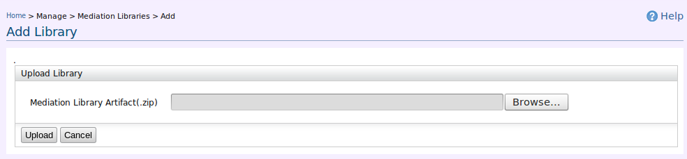

Mediation Library is a mechanism to group Templates and automatically expose it as a self contained set of function modules. It can be considered as a container consisting a set of templates grouped in a particular order. Currently a mediation library is shipped as a ".zip" file.
To deploy a Mediation Library, click Manage > ESB Mediation Libraries > Add. Mediation Library artifacts can be uploaded using the following user interface. (Figure 1)

Figure 1: Uploading Mediation Libraries
After deploying a library, to view the list of Mediation Libraries click Manage > ESB Mediation Libraries > List. Mediation Library list would be as follows. (Figure 2)
Figure 2: Mediation Library List
To undeploy a Mediation Library installed, click Delete link in the library list shown in the Figure 2.
Users should import the mediation library to invoke the templates defined in the library. To import a Mediation Library, click Manage > ESB Mediation Libraries > List and in that interface (Figure 2) click Import to import the particular Library.
After importing, to view the import list, click Imports tab in Figure 2. Imports list would be as follows. (Figure 3)
Figure 3: Imports List
To delete a Mediation Library import , click Delete link in the imports list shown in the Figure 3.